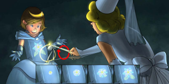
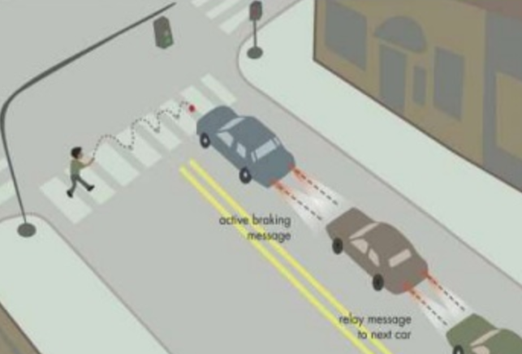
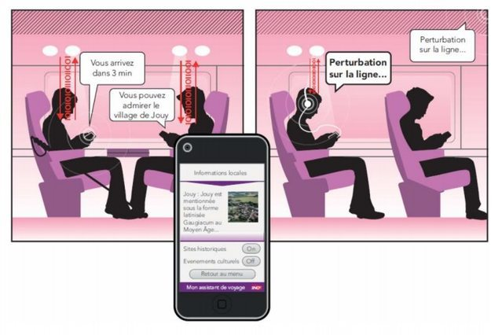
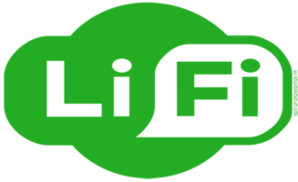
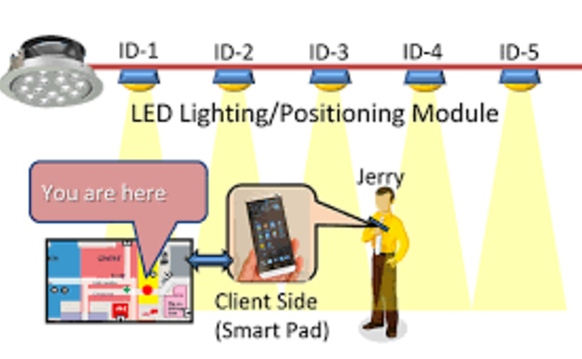
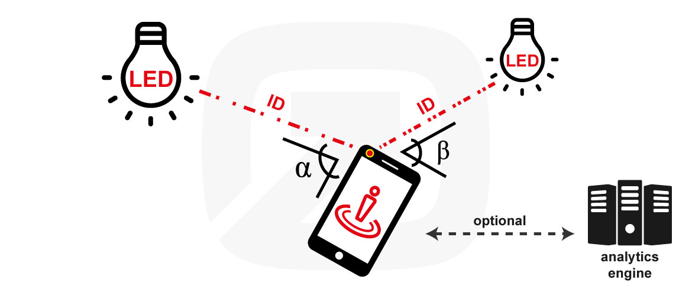
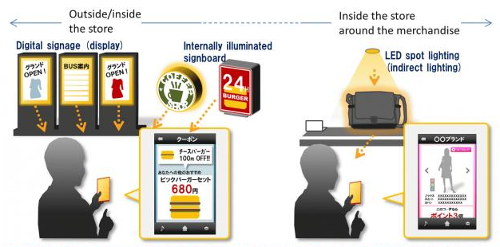
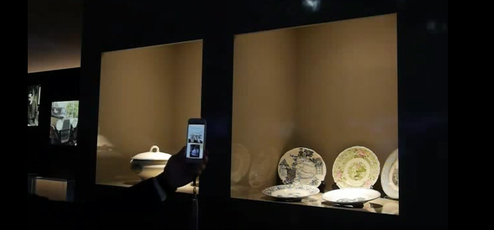

Les applications de la communication par lumière visible sont nombreuses, certaines sont déjà largement utilisés actuellement, mais la plupart des applications sont à l’état de recherche et semblent prometteuses.
VLC pour l’Internet des objets
Tout d’abord, regardons si VLC a une application dans le cadre de l’Internet des objets.
Comme nous l’avons vu dans l’article de présentation, la communication par lumière visible à base de LED à de nombreuses caractéristiques qui correspondent bien à une utilisation dans le cadre de l’Internet des objets:
- bas débit : ~100bit/s à ~10kbit/s
- permet de décongestionner les réseaux et désaturer le spectre des radio fréquences
- optimisation la consommation énergétique ce qui permet une augmentation de l’autonomie, critique pour l’IoT
- faible coût en comparaison d’une technologie RF
- sécurisation des données
Ainsi, l’Internet des Objets risque d’être une application important de la communication par lumière visible.
Le jeu et le divertissement
Le laboratoire Disney Research a une équipe de recherche sur la communication par lumière visible . L’idée est de permettre une communication entre l’enfant et le jouet par l’intermédiaire de lumière visible, de nombreux articles sont disponibles sur leur siteweb.

Les villes intelligentes
Des études et expérimentations sont effectués pour intégrer de la communication par lumière visible dans les villes intelligentes.
Par exemple, les feux de signalisations pourraient avertir les voitures autonomes de leur état. Des communications entre véhicules sont aussi envisageables.

VLC dans le transport
En 2013, la SNCF a commencé à travailler avec oledcom pour utiliser les technologies de la communication par lumière visible dans les TGV et les gares (voir présentation du projet ici).
Une idée est par exemple de transmettre des informations (perturbations de lignes, horaires d’arrivée, …) aux voyageurs des TGV par l’intermédiaire des liseuses à LED présent au dessus de chaque voyageur.

Le Li-Fi
Le Li-fi est souvent confondu directement avec VLC, mais ce n’est qu’une sous partie du VLC. En particulier, le Li-fi et la partie haut débit du VLC.

Cette technologie a de nombreuses application. Elle pourrait par exemple venir en complément du wifi, remplacer la plupart des communications haut débits sans fils et courtes distances. Je vous invite à consulter l’article “Le Li-Fi peut-il révolutionner les réseaux sans-fil à la maison ?”.
Beaucoup de recherches sont effectuées pour obtenir des débits de plus en plus important. En 2014, l’équipe de recherche du projet “Ultra-parallel visible light communications (UP-VLC)” a obtenue des débits de plus de 10Gbps en utilisant de l’optoélectronique à base de GaN (Nitrure de Galium). En 2015, un article a été publié présentant un système de communication optique avec un débit de plus de 100Gbps.
La première commercialisation d’un système LiFi bidirectionnel haut débit est très récente (2016).
Cette technologie étant encore récente, certains standards commencent à se mettre en places, notamment le standard “IEEE 802.15.7: Visible Light Communication”. Il y a également le Visible Light Communications Consortium qui est un regroupement de plusieurs entreprises japonaises dont le but est standardiser les technologies VLC et éviter la multiplication de protocoles.
Localisation Indoor
La localisation Indoor est un marcher très important, et la communication par lumière visible a de nombreux atout pouvant lui permettre de devenir la technologie prépondérante pour ce type d’applications. Pour l’instant les méthodes de localisations indoor utilisent principalement deux techniques:
- la localisation par ID
- la localisation par triangulation
La localisation par ID
La localisation par ID correspond à une méthode ou l’on capte (un ou plusieurs) émetteurs qui individuellement transmettent un identifiant ou une localisation. Le recepteur peut alors déterminer sa position en fonction des informations qu’il reçoit. Ceci existe par exemple en technologie bluetooth : le iBeacon.
En technologie VLC, l’idée est la suivante: on positionne dans la pièce une série de lampes qui transmette des identifiants que l’on récupère sur un smartphone. Puis, chaque identifiant étant associé à une emplacement, on peut récupérer l’information en position sur le smartphone.

Cette technique est utilisée par Philips qui commercialise un système de positionnement Indoor utilisant à destination de l’industrie de la grande distribution. Carrefour expérimente ceci dans un de leur supermarché à Lille, je vous laisse voir la présentation vidéo de ce projet ci dessous.
Ce système est également utilisé par “Nakagawa Laboratories” (site] pour faire des recherches sur les déplacements de clients dans des magasins.
La précision d’un tel dispositif va dépendre de la densité de lampes au plafond, il est donc compliqué d’obtenir des précisions en dessous du mettre.
La localisation par triangulation
Cependant, des applications requièrent des précisions supérieures que l’on peut obtenir toujours en technologie VLC mais cette fois ci en utilisant une autre technique: la triangulation.
L’idée est un peu la même que pour le GPS. La précision obtenue est de l’ordre de 10cm en positionnement et de 3° en orientation. Pour plus d’informations sur ce dispositifs, consultez l’article de recherche “Indoor Positioning with Mobile Phones and Visible Light”.

Online to Offline Marketing, Micro localisation, Affichages d’informations contextuelles…
Beaucoup d’autres applications sont possibles.
L’idée est de transmettre des offres promotionnelles qui puissent être captés directement sur les smartphone. Puis dans les magasins, il y possible de transmettre de l’information par rapport à un article par la lumière qui éclaire l’objet, puis d’en récupérer l’information sur un téléphone par lumière indirecte. 
L’affichage d’informations contextuelles est également possible dans les musées pour afficher des informations concernant les œuvres exposées. 